Tendencias Salariales en Empleos de Ciencia de Datos, AI y ML (2025)#
Autores: Laura Cardona Ahumada, Elian Martinez Orozco, Evelyn Mondul y Luis Pino Perez
Fecha: agosto 2025
Introducción#
Esta base de datos presenta información actualizada sobre salarios globales en 2025 para profesionales de Ciencia de Datos, Aprendizaje Automático e Inteligencia Artificial. Fue construida a partir de fuentes públicas como AIJobs, 365DataScience, Payscale, KDnuggets y ZipRecruiter, y está orientada a apoyar análisis de mercado, modelos predictivos, visualizaciones interactivas y estudios sobre trabajo remoto.
El conjunto de datos fue obtenido desde Kaggle, a partir del recurso publicado por el usuario adilshamim8 bajo el título “Salaries for Data Science Jobs”: https://www.kaggle.com/datasets/adilshamim8/salaries-for-data-science-jobs?resource=download. Su contenido resulta útil para investigadores, profesionales del sector, estudiantes y reclutadores que buscan entender las dinámicas actuales de compensación en el ámbito tecnológico.
Objetivo#
El presente análisis tiene como objetivo desarrollar un modelo de aprendizaje automático capaz de predecir el rango salarial de empleos relacionados con Ciencia de Datos, Inteligencia Artificial y Aprendizaje Automático, a partir de información sobre características laborales y profesionales.
Además, se realizará un análisis exploratorio detallado de los datos para identificar patrones, desigualdades y factores determinantes del salario en estas áreas tecnológicas emergentes.
En este notebook se encuentran las siguientes sesiones:
Importaciones y configuración inicial
Carga de datos y selección de columnas
Análisis exploratorio de datos - EDA
Split Train / Validation / Test
Preprocesamiento
Modelos y búsqueda de hiperparámetros
Funciones auxiliares
Loop para evaluar modelos + gráficas + BDS
DataFrame de resultados y gráfico comparativo
1. Importaciones y configuración inicial#
Aquí cargamos todas las librerías necesarias:
Sklearn → para modelos, pipelines, métricas y validación cruzada.
XGBoost y MLP → modelos más avanzados.
statsmodels.tsa.stattools → para el BDS test en los residuos.
Matplotlib / PrettyTable → para gráficos y tablas estructuradas.
import numpy as np
import pandas as pd
import matplotlib.pyplot as plt
import seaborn as sns
from sklearn.compose import ColumnTransformer
from sklearn.pipeline import Pipeline
from sklearn.preprocessing import OneHotEncoder, MaxAbsScaler
from sklearn.impute import SimpleImputer
from sklearn.linear_model import Ridge, Lasso
from sklearn.neighbors import KNeighborsRegressor
from sklearn.tree import DecisionTreeRegressor
from sklearn.svm import SVR
from sklearn.neural_network import MLPRegressor
from sklearn.model_selection import GridSearchCV, RandomizedSearchCV, train_test_split
from sklearn.metrics import mean_absolute_error, mean_squared_error, mean_absolute_percentage_error
from xgboost import XGBRegressor
from scipy.stats import randint, uniform
from statsmodels.tsa.stattools import bds
from prettytable import PrettyTable
2. Carga de datos y selección de columnas#
Leemos el archivo salaries.csv.
Definimos variables categóricas (ejemplo: job_title, company_size) y numéricas (ejemplo: salario, work_year).
Construimos X_full (features) y y_full_price (target → salary_in_usd).
Aquí limpiamos y organizamos el dataset.
DATA_PATH = r"C:\Users\LUIS PINO\Documents\Machine_learning\Proyecto_final\salaries.csv"
df = pd.read_csv(DATA_PATH)
categorical_features = ['experience_level','employment_type','job_title','salary_currency','employee_residence','company_location','company_size']
numeric_features = ['work_year','salary','salary_in_usd','remote_ratio']
categorical_features = [c for c in categorical_features if c in df.columns]
numeric_features = [c for c in numeric_features if c in df.columns]
X_full = df[categorical_features + numeric_features].copy()
y_full_price = df['salary_in_usd'].copy()
3. Análisis exploratorio de datos - EDA#
sns.set(style='whitegrid', palette='Set2')
plt.rcParams['figure.figsize'] = (10, 6)
# Mostrar las primeras filas
df.head()
| work_year | experience_level | employment_type | job_title | salary | salary_currency | salary_in_usd | employee_residence | remote_ratio | company_location | company_size | |
|---|---|---|---|---|---|---|---|---|---|---|---|
| 0 | 2025 | EX | FT | Head of Data | 348516 | USD | 348516 | US | 0 | US | M |
| 1 | 2025 | EX | FT | Head of Data | 232344 | USD | 232344 | US | 0 | US | M |
| 2 | 2025 | SE | FT | Data Scientist | 145400 | USD | 145400 | US | 0 | US | M |
| 3 | 2025 | SE | FT | Data Scientist | 81600 | USD | 81600 | US | 0 | US | M |
| 4 | 2025 | MI | FT | Engineer | 160000 | USD | 160000 | US | 100 | US | M |
Dataset#
# Dimensiones
print(f"Filas: {df.shape[0]}, Columnas: {df.shape[1]}")
# Tipos de datos
print(df.dtypes)
# Información general
print(df.info())
# Estadísticas descriptivas
print(df.describe(include='all'))
# duplicadas
print("\nFilas duplicadas:", df.duplicated().sum())
Filas: 151445, Columnas: 11
work_year int64
experience_level object
employment_type object
job_title object
salary int64
salary_currency object
salary_in_usd int64
employee_residence object
remote_ratio int64
company_location object
company_size object
dtype: object
<class 'pandas.core.frame.DataFrame'>
RangeIndex: 151445 entries, 0 to 151444
Data columns (total 11 columns):
# Column Non-Null Count Dtype
--- ------ -------------- -----
0 work_year 151445 non-null int64
1 experience_level 151445 non-null object
2 employment_type 151445 non-null object
3 job_title 151445 non-null object
4 salary 151445 non-null int64
5 salary_currency 151445 non-null object
6 salary_in_usd 151445 non-null int64
7 employee_residence 151445 non-null object
8 remote_ratio 151445 non-null int64
9 company_location 151445 non-null object
10 company_size 151445 non-null object
dtypes: int64(4), object(7)
memory usage: 12.7+ MB
None
work_year experience_level employment_type job_title \
count 151445.000000 151445 151445 151445
unique NaN 4 4 422
top NaN SE FT Data Scientist
freq NaN 87491 150541 18751
mean 2024.435313 NaN NaN NaN
std 0.671842 NaN NaN NaN
min 2020.000000 NaN NaN NaN
25% 2024.000000 NaN NaN NaN
50% 2025.000000 NaN NaN NaN
75% 2025.000000 NaN NaN NaN
max 2025.000000 NaN NaN NaN
salary salary_currency salary_in_usd employee_residence \
count 1.514450e+05 151445 151445.000000 151445
unique NaN 26 NaN 104
top NaN USD NaN US
freq NaN 143173 NaN 135506
mean 1.628380e+05 NaN 157527.458411 NaN
std 2.080124e+05 NaN 74150.772377 NaN
min 1.400000e+04 NaN 15000.000000 NaN
25% 1.060000e+05 NaN 105800.000000 NaN
50% 1.470000e+05 NaN 146100.000000 NaN
75% 1.990000e+05 NaN 198000.000000 NaN
max 3.040000e+07 NaN 800000.000000 NaN
remote_ratio company_location company_size
count 151445.000000 151445 151445
unique NaN 97 3
top NaN US M
freq NaN 135569 147302
mean 20.938625 NaN NaN
std 40.620393 NaN NaN
min 0.000000 NaN NaN
25% 0.000000 NaN NaN
50% 0.000000 NaN NaN
75% 0.000000 NaN NaN
max 100.000000 NaN NaN
Filas duplicadas: 79532
Variables#
df.info()
<class 'pandas.core.frame.DataFrame'>
RangeIndex: 151445 entries, 0 to 151444
Data columns (total 11 columns):
# Column Non-Null Count Dtype
--- ------ -------------- -----
0 work_year 151445 non-null int64
1 experience_level 151445 non-null object
2 employment_type 151445 non-null object
3 job_title 151445 non-null object
4 salary 151445 non-null int64
5 salary_currency 151445 non-null object
6 salary_in_usd 151445 non-null int64
7 employee_residence 151445 non-null object
8 remote_ratio 151445 non-null int64
9 company_location 151445 non-null object
10 company_size 151445 non-null object
dtypes: int64(4), object(7)
memory usage: 12.7+ MB
df.describe()
| work_year | salary | salary_in_usd | remote_ratio | |
|---|---|---|---|---|
| count | 151445.000000 | 1.514450e+05 | 151445.000000 | 151445.000000 |
| mean | 2024.435313 | 1.628380e+05 | 157527.458411 | 20.938625 |
| std | 0.671842 | 2.080124e+05 | 74150.772377 | 40.620393 |
| min | 2020.000000 | 1.400000e+04 | 15000.000000 | 0.000000 |
| 25% | 2024.000000 | 1.060000e+05 | 105800.000000 | 0.000000 |
| 50% | 2025.000000 | 1.470000e+05 | 146100.000000 | 0.000000 |
| 75% | 2025.000000 | 1.990000e+05 | 198000.000000 | 0.000000 |
| max | 2025.000000 | 3.040000e+07 | 800000.000000 | 100.000000 |
El 93% de los datos corresponden a 2024–2025. Los salarios típicos en USD se ubican entre 105,000 y 198,000, aunque existen outliers muy altos (hasta 800,000). La mitad de los empleos son presenciales, con una proporción menor en teletrabajo total.
Distribución de variables numéricas#
sns.set(style="whitegrid")
numerical_cols = df.select_dtypes(include=np.number).columns
n = len(numerical_cols)
# Calcular filas y columnas automáticamente
cols = 3
rows = (n // cols) + (n % cols > 0)
fig, axes = plt.subplots(rows, cols, figsize=(15, rows * 3))
axes = axes.flatten()
for i, col in enumerate(numerical_cols):
sns.histplot(df[col], kde=True, bins=20, color='#4C72B0', ax=axes[i])
axes[i].axvline(df[col].median(), color='crimson', linestyle='--', linewidth=1)
axes[i].axvline(df[col].mean(), color='darkgreen', linestyle='--', linewidth=1)
axes[i].set_title(f"{col}", fontsize=11, fontweight="bold")
# Eliminar ejes vacíos
for j in range(i+1, len(axes)):
fig.delaxes(axes[j])
plt.tight_layout()
plt.show()
Distribución de variables categóricas#
sns.set_style("whitegrid")
palette_cat = sns.color_palette("Set2")
# Función auxiliar: Top N
def plot_top_categories(df, col, top_n=15, ax=None):
"""
Grafica un countplot con las Top N categorías más frecuentes.
"""
top_values = df[col].value_counts().nlargest(top_n).index
data = df[df[col].isin(top_values)]
ax = sns.countplot(
data=data,
x=col,
order=data[col].value_counts().index,
palette=palette_cat,
edgecolor='gray',
ax=ax
)
ax.set_title(f'{col} (Top {top_n})', fontsize=12, fontweight='bold', color='darkblue')
ax.set_xlabel("")
ax.set_ylabel("Frecuencia", fontsize=10)
ax.tick_params(axis='x', rotation=30, labelsize=9)
# Etiquetas en las barras
for bar in ax.patches:
height = bar.get_height()
if height > 0:
ax.annotate(f'{height}',
(bar.get_x() + bar.get_width()/2, height),
ha='center', va='bottom', fontsize=8,
color='black', xytext=(0, 3),
textcoords='offset points')
return ax
# Gráficas categóricas
categorical_cols = df.select_dtypes(include='object').columns
# Ajustes para columnas específicas
special_top = {
"job_title": 20,
"employee_residence": 15,
"company_location": 15
}
# Excluir salary_currency (lo graficamos como pastel)
categorical_cols = [c for c in categorical_cols if c != "salary_currency"]
n = len(categorical_cols)
cols = 2
rows = (n // cols) + (n % cols > 0)
fig, axes = plt.subplots(rows, cols, figsize=(14, rows * 4))
axes = axes.flatten()
for i, col in enumerate(categorical_cols):
top_n = special_top.get(col, 15) # por defecto Top 15
plot_top_categories(df, col, top_n=top_n, ax=axes[i])
# Eliminar ejes sobrantes
for j in range(i+1, len(axes)):
fig.delaxes(axes[j])
plt.tight_layout()
plt.show()
# Gráfico de Salary Currency
currency_counts = df["salary_currency"].value_counts()
plt.figure(figsize=(6,6))
plt.pie(currency_counts.values, labels=currency_counts.index,
autopct='%1.1f%%', colors=sns.color_palette("Set3"), startangle=90)
plt.title("Distribución de Salary Currency", fontsize=13, fontweight="bold", color="darkblue")
plt.show()
C:\Users\LUIS PINO\AppData\Local\Temp\ipykernel_32208\2877972932.py:12: FutureWarning:
Passing `palette` without assigning `hue` is deprecated and will be removed in v0.14.0. Assign the `x` variable to `hue` and set `legend=False` for the same effect.
ax = sns.countplot(
C:\Users\LUIS PINO\AppData\Local\Temp\ipykernel_32208\2877972932.py:12: UserWarning: The palette list has more values (8) than needed (4), which may not be intended.
ax = sns.countplot(
C:\Users\LUIS PINO\AppData\Local\Temp\ipykernel_32208\2877972932.py:12: FutureWarning:
Passing `palette` without assigning `hue` is deprecated and will be removed in v0.14.0. Assign the `x` variable to `hue` and set `legend=False` for the same effect.
ax = sns.countplot(
C:\Users\LUIS PINO\AppData\Local\Temp\ipykernel_32208\2877972932.py:12: UserWarning: The palette list has more values (8) than needed (4), which may not be intended.
ax = sns.countplot(
C:\Users\LUIS PINO\AppData\Local\Temp\ipykernel_32208\2877972932.py:12: FutureWarning:
Passing `palette` without assigning `hue` is deprecated and will be removed in v0.14.0. Assign the `x` variable to `hue` and set `legend=False` for the same effect.
ax = sns.countplot(
C:\Users\LUIS PINO\AppData\Local\Temp\ipykernel_32208\2877972932.py:12: UserWarning:
The palette list has fewer values (8) than needed (20) and will cycle, which may produce an uninterpretable plot.
ax = sns.countplot(
C:\Users\LUIS PINO\AppData\Local\Temp\ipykernel_32208\2877972932.py:12: FutureWarning:
Passing `palette` without assigning `hue` is deprecated and will be removed in v0.14.0. Assign the `x` variable to `hue` and set `legend=False` for the same effect.
ax = sns.countplot(
C:\Users\LUIS PINO\AppData\Local\Temp\ipykernel_32208\2877972932.py:12: UserWarning:
The palette list has fewer values (8) than needed (15) and will cycle, which may produce an uninterpretable plot.
ax = sns.countplot(
C:\Users\LUIS PINO\AppData\Local\Temp\ipykernel_32208\2877972932.py:12: FutureWarning:
Passing `palette` without assigning `hue` is deprecated and will be removed in v0.14.0. Assign the `x` variable to `hue` and set `legend=False` for the same effect.
ax = sns.countplot(
C:\Users\LUIS PINO\AppData\Local\Temp\ipykernel_32208\2877972932.py:12: UserWarning:
The palette list has fewer values (8) than needed (15) and will cycle, which may produce an uninterpretable plot.
ax = sns.countplot(
C:\Users\LUIS PINO\AppData\Local\Temp\ipykernel_32208\2877972932.py:12: FutureWarning:
Passing `palette` without assigning `hue` is deprecated and will be removed in v0.14.0. Assign the `x` variable to `hue` and set `legend=False` for the same effect.
ax = sns.countplot(
C:\Users\LUIS PINO\AppData\Local\Temp\ipykernel_32208\2877972932.py:12: UserWarning: The palette list has more values (8) than needed (3), which may not be intended.
ax = sns.countplot(
Tasa anual de contratación de profesionales en ciencia de datos#
df['work_year'].value_counts()
work_year
2025 78726
2024 62241
2023 8524
2022 1661
2021 218
2020 75
Name: count, dtype: int64
df['work_year'].value_counts().sort_index().plot.bar(
figsize=(5,3), color="skyblue", edgecolor="black"
)
plt.xlabel("Años")
plt.ylabel("Contratados")
plt.title("Contrataciones anuales en Ciencia de Datos")
plt.show()
Impacto del nivel de experiencia en las oportunidades de empleo cada año#
df.groupby('work_year')['experience_level'].value_counts()
work_year experience_level
2020 MI 31
EN 21
SE 19
EX 4
2021 MI 87
SE 75
EN 46
EX 10
2022 SE 1142
MI 359
EN 117
EX 43
2023 SE 6097
MI 1717
EN 466
EX 244
2024 SE 35331
MI 19534
EN 6185
EX 1191
2025 SE 44827
MI 24400
EN 6828
EX 2671
Name: count, dtype: int64
df_counts = df.groupby('work_year')['experience_level'].value_counts().unstack(fill_value=0)
df_props = df_counts.div(df_counts.sum(axis=1), axis=0)
df_props.plot(kind='bar', stacked=True, figsize=(6,4))
plt.xlabel('Years')
plt.ylabel('Work Experience')
plt.title('Work Experience by Years')
plt.show()
Se puede evidenciar que el mercado de Ciencia de Datos favorece perfiles Senior y Mid-level, pero sigue abriendo espacio para entry-level, aunque en menor medida.
Cambio de salarios a lo largo del tiemp#
df.groupby('work_year')['salary_in_usd'].mean()
work_year
2020 102250.866667
2021 99922.073394
2022 134146.471403
2023 153682.160371
2024 159589.557767
2025 157018.982585
Name: salary_in_usd, dtype: float64
df.groupby('work_year')['salary_in_usd'].mean().plot.line(figsize=(5,3), marker='o')
plt.xlabel('Years')
plt.ylabel('Salaries in USD')
plt.title('Salaries by Years')
plt.tight_layout()
plt.show()
Después de una ligera caída en 2021, los salarios han mostrado una tendencia creciente hasta 2024, con una leve disminución en 2025.
Distribución salarial según el nivel de experiencia#
df.groupby('experience_level')['salary_in_usd'].mean()
experience_level
EN 98961.735270
EX 200471.428537
MI 142301.177831
SE 172657.764364
Name: salary_in_usd, dtype: float64
df.boxplot(column='salary_in_usd', by='experience_level', figsize=(5,3))
plt.title('Salary Distribution by Experience Level')
plt.suptitle('')
plt.xlabel('Experience Level')
plt.ylabel('Salaries in USD')
plt.show()
Los resultados muestran que el nivel de experiencia tiene un impacto claro en los salarios promedio.
Salarios según el tipo de empleo#
df.groupby('employment_type')['salary_in_usd'].mean()
employment_type
CT 104686.413276
FL 50651.562500
FT 157930.592397
PT 76051.422803
Name: salary_in_usd, dtype: float64
df.boxplot(column='salary_in_usd', by='employment_type', figsize=(5,3))
plt.title('Salary Distribution by Employment type')
plt.suptitle('')
plt.xlabel('Employment type')
plt.ylabel('Salaries in USD')
plt.show()
Se puede observar que los profesionales a tiempo completo son quienes reciben los salarios más altos en promedio, mientras que los freelancers y los de medio tiempo ganan bastante menos.
Títulos de trabajo con los salarios promedios más altos#
df.groupby('job_title')['salary_in_usd'].median().sort_values(ascending = False).head(7)
job_title
Research Team Lead 450000.0
Analytics Engineering Manager 399880.0
Data Science Tech Lead 375000.0
Applied AI ML Lead 292500.0
IT Enterprise Data Architect 284090.0
Head of Applied AI 281500.0
AIRS Solutions Specialist 263250.0
Name: salary_in_usd, dtype: float64
df.groupby('job_title')['salary_in_usd'].median().sort_values(ascending=False).head(7).plot.bar(figsize=(6,4))
plt.xlabel('Job Title')
plt.ylabel('Salary in USD')
plt.title('Median Salary by Job Title')
plt.show()
Nos confirma que los puestos de liderazgo y gestión en ciencia de datos, analítica e inteligencia artificial son los que concentran los salarios más altos.
Los títulos de trabajo más comunes#
df['job_title'].value_counts().head(7)
job_title
Data Scientist 18751
Software Engineer 16948
Data Engineer 16352
Data Analyst 13779
Engineer 11004
Machine Learning Engineer 8887
Manager 7811
Name: count, dtype: int64
plt.figure(figsize=(6,4))
df['job_title'].value_counts().head(7).sort_values().plot.barh()
plt.ylabel('Job Title', fontsize=10)
plt.xlabel('Number of Job Title', fontsize=10)
plt.title('Number of Common Job Title', fontsize=12)
plt.tight_layout()
plt.show()
Los roles más comunes están relacionados con ciencia de datos, ingeniería de software y análisis de datos, siendo Data Scientist el más frecuente
Impacto del trabajo remoto en el salario#
df.groupby('remote_ratio')['salary_in_usd'].mean()
remote_ratio
0 159382.780154
50 81711.629179
100 151285.861599
Name: salary_in_usd, dtype: float64
remote_salary = df.groupby('remote_ratio')['salary_in_usd'].mean()
remote_salary = remote_salary.rename({
0: 'On-site',
50: 'Hybrid',
100: 'Fully Remote'
})
print(remote_salary)
remote_ratio
On-site 159382.780154
Hybrid 81711.629179
Fully Remote 151285.861599
Name: salary_in_usd, dtype: float64
plt.figure(figsize=(5,3))
remote_salary.plot.bar()
plt.xlabel('Remote Ratio', fontsize=9)
plt.ylabel('Salary in USD', fontsize=9)
plt.title('Salaries by Remote Ratio', fontsize=10)
plt.tight_layout()
plt.show()
los trabajos totalmente presenciales (On-site) y completamente remotos (Fully Remote) tienen salarios promedio más altos, mientras que los puestos híbridos (Hybrid) presentan un salario promedio significativamente menor.
Influencia del tamaño de la empresa en el salario#
df.groupby('company_size')['salary_in_usd'].mean()
company_size
L 159339.729496
M 157581.824483
S 87835.258065
Name: salary_in_usd, dtype: float64
plt.figure(figsize=(5,3))
df.groupby('company_size')['salary_in_usd'].mean().plot.bar()
plt.xlabel('Company Size', fontsize=9)
plt.ylabel('Salary in USD', fontsize=9)
plt.title('Salaries by Company Size', fontsize=10)
plt.tight_layout()
plt.show()
Se observa que las empresas grandes (L) y medianas (M) ofrecen salarios promedio significativamente más altos que las pequeñas (S).
Relación entre el tamaño de la empresa y la contratación de empleados remotos#
df.groupby('company_size')['remote_ratio'].value_counts()
company_size remote_ratio
L 0 3320
100 391
50 215
M 0 116196
100 31036
50 70
S 100 119
0 54
50 44
Name: count, dtype: int64
plt.figure(figsize=(6,3))
counts = df.groupby('company_size')['remote_ratio'].value_counts().unstack(fill_value=0)
sns.heatmap(counts, annot=True, fmt="d", cmap="YlGnBu")
plt.title('Company Size vs Remote Ratio (Count of Employees)', fontsize=10)
plt.ylabel('Company Size', fontsize=9)
plt.xlabel('Remote Ratio', fontsize=9)
plt.tight_layout()
plt.show()
Las empresas más grandes tienden a tener más empleados presenciales, mientras que las pequeñas muestran una proporción relativamente mayor de trabajadores totalmente remotos.
Matriz de correlación#
plt.figure(figsize=(10, 6))
sns.heatmap(df.corr(numeric_only=True), annot=True, cmap='coolwarm', fmt=".2f")
plt.title('Matriz de Correlación')
plt.show()
La matriz de correlación muestra que salary y salary_in_usd están moderadamente relacionadas, mientras que remote_ratio y work_year presentan correlaciones bajas con las demás variables, lo que sugiere que no hay evidencia clara de que la modalidad de trabajo remoto o el año del registro influyan en el salario.
4. Split Train / Validation / Test#
Separamos el dataset en 3 subconjuntos:
Train (60%) → usado para entrenar los modelos.
Validation (20%) → para evaluar durante la búsqueda de hiperparámetros.
Test (20%) → para evaluar el rendimiento final de los modelos.
Esto evita sobreajuste y asegura una prueba justa al final.
# 60% Train, 20% Validation, 20% Test
X_temp, X_test_reg, y_temp, y_test_reg = train_test_split(X_full, y_full_price, test_size=0.2, random_state=42)
X_train_reg, X_val_reg, y_train_reg, y_val_reg = train_test_split(X_temp, y_temp, test_size=0.25, random_state=42)
# 0.25 * 0.8 = 0.2
5. Preprocesamiento#
Definimos un pipeline de transformación:
Categóricas → imputar valores faltantes + OneHotEncoding.
Numéricas → imputar valores faltantes + escalado.
Todo junto en un ColumnTransformer.
Así garantizamos que todos los modelos reciban datos ya limpios y escalados.
categorical_transformer = Pipeline(steps=[
("imputer", SimpleImputer(strategy="most_frequent")),
("encoder", OneHotEncoder(handle_unknown="ignore"))
])
numeric_transformer = Pipeline(steps=[
("imputer", SimpleImputer(strategy="median")),
("scaler", MaxAbsScaler())
])
preprocessor = ColumnTransformer(
transformers=[
("cat", categorical_transformer, categorical_features),
("num", numeric_transformer, numeric_features)
]
)
6. Modelos y búsqueda de hiperparámetros#
Definimos 7 modelos: Ridge, Lasso, KNN, Árbol, SVR, XGBoost, MLP.
Configuramos sus hiperparámetros candidatos.
Usamos GridSearchCV (para búsquedas exhaustivas) y RandomizedSearchCV (para búsqueda aleatoria en rangos amplios).
Cada búsqueda usa validación cruzada (cv=3) dentro del conjunto de entrenamiento.
Aquí encontramos la “mejor versión” de cada modelo.
ridge = Pipeline(steps=[("preprocessor", preprocessor), ("model", Ridge())])
lasso = Pipeline(steps=[("preprocessor", preprocessor), ("model", Lasso())])
knn = Pipeline(steps=[("preprocessor", preprocessor), ("model", KNeighborsRegressor())])
dtree = Pipeline(steps=[("preprocessor", preprocessor), ("model", DecisionTreeRegressor(random_state=42))])
svr = Pipeline(steps=[("preprocessor", preprocessor), ("model", SVR())])
xgb = Pipeline(steps=[("preprocessor", preprocessor), ("model", XGBRegressor(objective="reg:squarederror", random_state=42))])
mlp = Pipeline(steps=[("preprocessor", preprocessor), ("model", MLPRegressor(max_iter=500, random_state=42))])
ridge_params = {"model__alpha": [0.1, 1, 10, 100]}
lasso_params = {"model__alpha": [0.001, 0.01, 0.1, 1]}
knn_params = {"model__n_neighbors": [3, 5, 7, 9]}
dtree_params = {"model__max_depth": [3, 5, 7, None]}
svr_params = {"model__C": [0.1, 1, 10], "model__kernel": ["rbf", "linear"]}
xgb_params = {"model__n_estimators": randint(50, 300), "model__max_depth": randint(3, 10), "model__learning_rate": uniform(0.01, 0.2)}
mlp_params = {"model__hidden_layer_sizes": [(50,), (100,), (50,50)], "model__alpha": uniform(0.0001, 0.01), "model__activation": ["relu", "tanh"]}
ridge_search = GridSearchCV(ridge, ridge_params, cv=3, scoring="neg_mean_squared_error")
lasso_search = GridSearchCV(lasso, lasso_params, cv=3, scoring="neg_mean_squared_error")
knn_search = GridSearchCV(knn, knn_params, cv=3, scoring="neg_mean_squared_error")
dtree_search = GridSearchCV(dtree, dtree_params, cv=3, scoring="neg_mean_squared_error")
svr_search = GridSearchCV(svr, svr_params, cv=3, scoring="neg_mean_squared_error")
xgb_search = RandomizedSearchCV(xgb, xgb_params, n_iter=10, cv=3, scoring="neg_mean_squared_error", random_state=42, n_jobs=-1)
mlp_search = RandomizedSearchCV(mlp, mlp_params, n_iter=10, cv=3, scoring="neg_mean_squared_error", random_state=42, n_jobs=-1)
for search in [ridge_search, lasso_search, knn_search, dtree_search, svr_search, xgb_search, mlp_search]:
search.fit(X_train_reg, y_train_reg)
7. Funciones auxiliares#
evaluate_model → calcula métricas (MAE, MSE, RMSE, MAPE) para Train/Val/Test.
bds_test → aplica el BDS Test para verificar si los residuos son independientes (ruido blanco).
plot_predictions → gráfico real vs predicho para visualizar qué tan bien ajusta cada modelo.
Son funciones de apoyo para evitar repetir código.
def evaluate_model(name, model, X_train, X_val, X_test, y_train, y_val, y_test):
results = {}
for split, (X, y) in [
("Train", (X_train, y_train)),
("Validation", (X_val, y_val)),
("Test", (X_test, y_test))
]:
y_pred = model.predict(X)
mae = mean_absolute_error(y, y_pred)
mse = mean_squared_error(y, y_pred)
rmse = np.sqrt(mse)
mape = mean_absolute_percentage_error(y, y_pred) * 100
results[(name, split)] = [mae, mse, rmse, mape]
return results
#BDS Test
def bds_test(y_true, y_pred):
residuals = y_true - y_pred
bds_result = BDS(residuals)
return bds_result.stat, bds_result.pvalue
#Gráfico Real vs Predicho
def plot_predictions(y_true, y_pred, title):
plt.figure(figsize=(6,6))
plt.scatter(y_true, y_pred, alpha=0.5)
max_val = max(y_true.max(), y_pred.max())
min_val = min(y_true.min(), y_pred.min())
plt.plot([min_val, max_val], [min_val, max_val], 'r--', label="Perfect Fit")
plt.xlabel("Real")
plt.ylabel("Predicho")
plt.title(title)
plt.legend()
plt.tight_layout()
plt.show()
8. Loop para evaluar modelos + gráficas + BDS#
Iteramos por cada modelo entrenado.
Guardamos sus métricas en Train/Val/Test.
Aplicamos el BDS Test en el conjunto de Test (para independencia de residuos).
Generamos gráficos comparativos (Real vs Predicho) en cada conjunto.
Aquí ocurre la evaluación central.
import numpy as np
import pandas as pd
import matplotlib.pyplot as plt
from statsmodels.tsa.stattools import bds
# ----------------------------
# Función para ejecutar el BDS Test usando statsmodels
# ----------------------------
def bds_test(y_true, y_pred, max_dim=2, epsilon=None, distance=1.5):
"""
Aplica el test BDS (Brock-Dechert-Scheinkman) a los residuos del modelo usando statsmodels.
Parámetros:
y_true (array-like): Valores reales.
y_pred (array-like): Predicciones.
max_dim (int): Dimensión máxima de embedding (por defecto 2).
epsilon (float|None): Umbral de distancia; si es None, se calcula automáticamente.
distance (float): Multiplicador para calcular epsilon si este es None.
Retorna:
stat (float): Estadístico del test.
pvalue (float): Valor p.
"""
residuals = np.array(y_true) - np.array(y_pred)
residuals = residuals[~np.isnan(residuals)] # Elimina NaNs
stat, pvalue = bds(residuals, max_dim=max_dim, epsilon=epsilon, distance=distance)
return stat, pvalue
# ----------------------------
# Diccionarios para almacenar resultados
# ----------------------------
results = {}
bds_results = {}
# ----------------------------
# Loop sobre modelos
# ----------------------------
for name, search in [
("Ridge", ridge_search),
("Lasso", lasso_search),
("KNN", knn_search),
("DecisionTree", dtree_search),
("SVR", svr_search),
("XGB", xgb_search),
("MLP", mlp_search)
]:
best_model = search.best_estimator_
# Métricas del modelo
metrics = evaluate_model(name, best_model, X_train_reg, X_val_reg, X_test_reg,
y_train_reg, y_val_reg, y_test_reg)
results.update(metrics)
# Test BDS en TEST
y_test_pred = best_model.predict(X_test_reg)
stat, pvalue = bds_test(y_test_reg, y_test_pred)
bds_results[name] = (stat, pvalue)
# Gráficos de predicción
plot_predictions(y_train_reg, best_model.predict(X_train_reg), f"{name} – Train")
plot_predictions(y_val_reg, best_model.predict(X_val_reg), f"{name} – Validation")
plot_predictions(y_test_reg, y_test_pred, f"{name} – Test")
# ----------------------------
# Crear DataFrame con resultados BDS
# ----------------------------
bds_df = pd.DataFrame(bds_results, index=["BDS_Stat", "p_value"]).T
bds_df["Interpretación"] = np.where(
bds_df["p_value"] > 0.05,
"Residuos independientes (i.i.d.)",
"Dependencia no lineal"
)
print("\nResultados del Test BDS:")
print(bds_df)
# ----------------------------
# Gráfico comparativo de p-values
# ----------------------------
plt.figure(figsize=(8, 5))
plt.bar(bds_df.index, bds_df["p_value"])
plt.axhline(y=0.05, color="red", linestyle="--", label="α = 0.05")
plt.title("p-values del Test BDS por Modelo")
plt.ylabel("p-value")
plt.xticks(rotation=45)
plt.legend()
plt.show()
 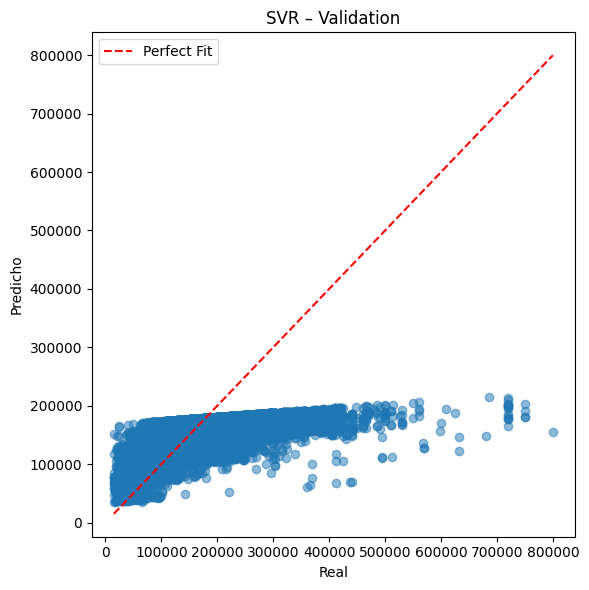
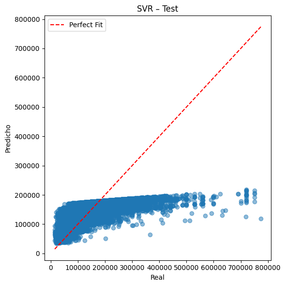
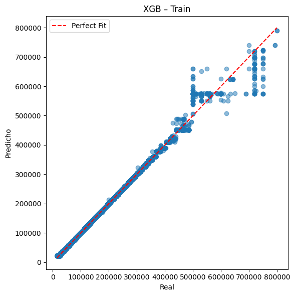
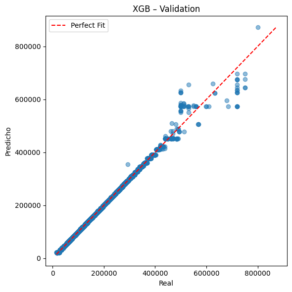
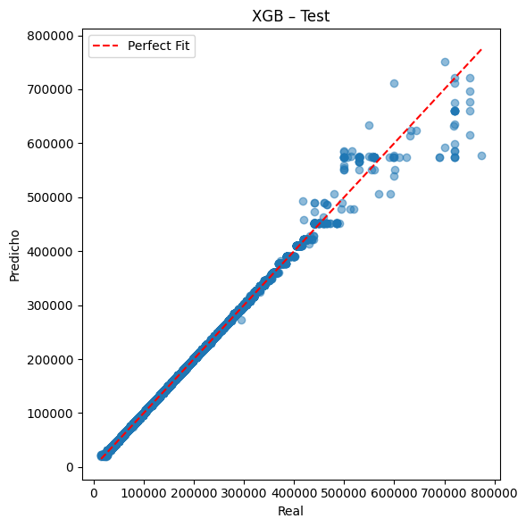
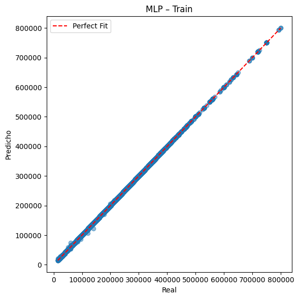
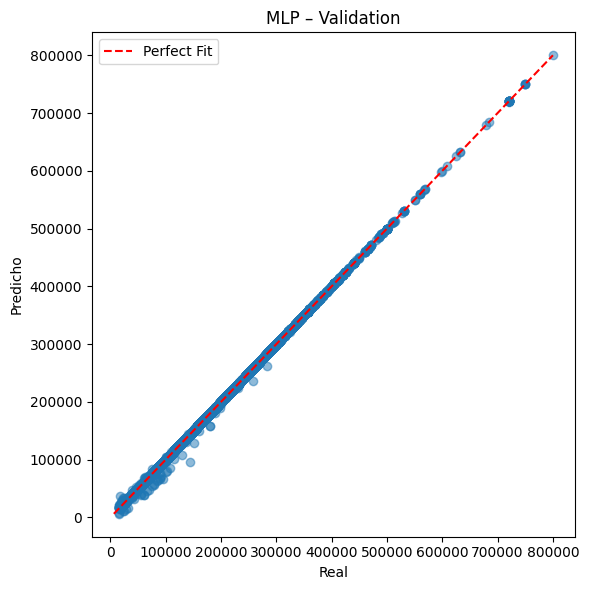
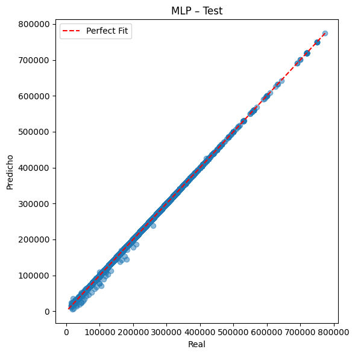
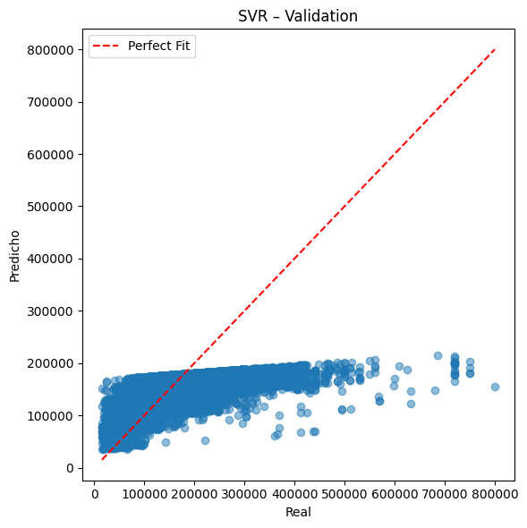
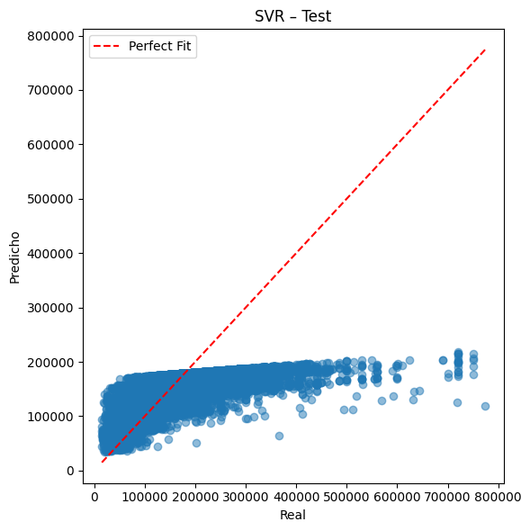
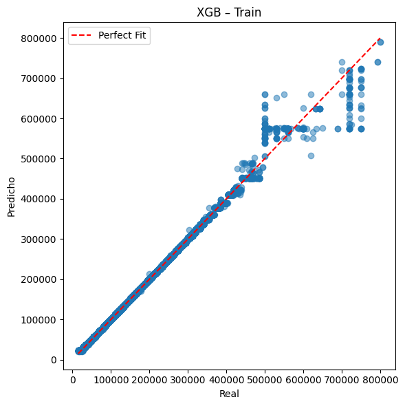
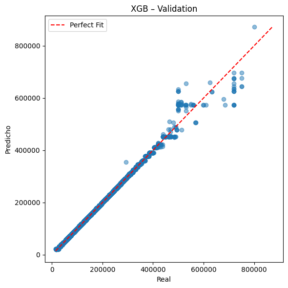
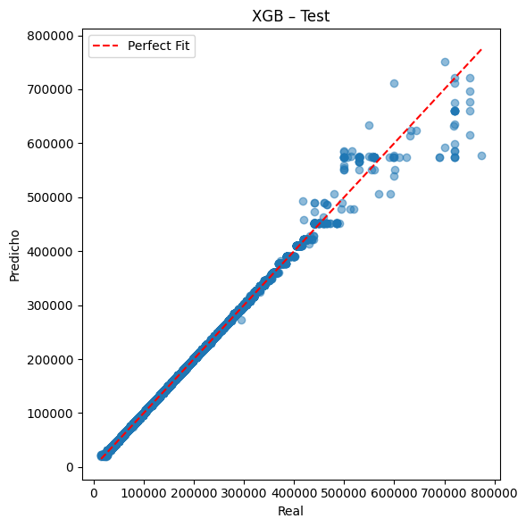
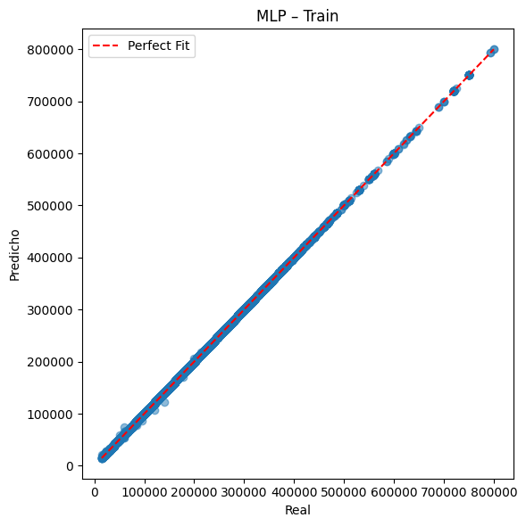
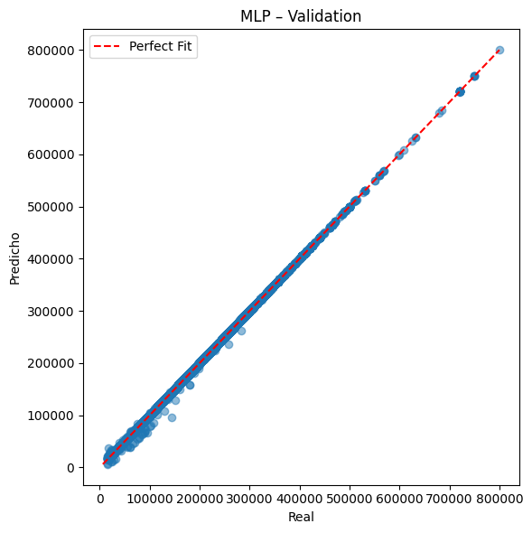
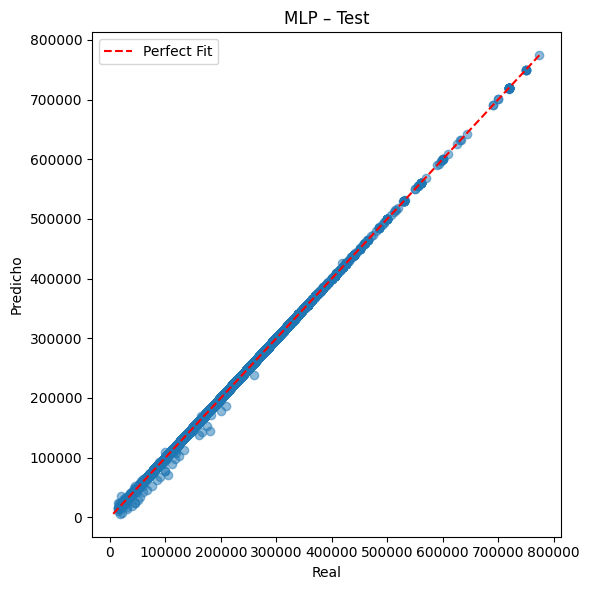
Resultados del Test BDS:
BDS_Stat p_value \
Ridge 1.3118070501334083 0.18958524555966283
Lasso 0.28742172653623066 0.7737894273349852
KNN -0.7150104517976652 0.4746025849779215
DecisionTree -0.1445048659122203 0.8851018143385803
SVR 0.6763627049734069 0.4988103899646007
XGB 0.28795145700937724 0.7733838972005547
MLP 1.639088912357368 0.10119474385662283
Interpretación
Ridge Residuos independientes (i.i.d.)
Lasso Residuos independientes (i.i.d.)
KNN Residuos independientes (i.i.d.)
DecisionTree Residuos independientes (i.i.d.)
SVR Residuos independientes (i.i.d.)
XGB Residuos independientes (i.i.d.)
MLP Residuos independientes (i.i.d.)
En todos los modelos (Ridge, Lasso, KNN, DecisionTree, SVR, XGB y MLP), los valores p del Test BDS resultaron superiores a 0.05, por lo que no se rechaza la hipótesis nula de independencia. Esto significa que los residuos se comportan como ruido blanco (i.i.d.), sin evidencias de dependencia no lineal, lo cual respalda la validez de los modelos y la confiabilidad de sus estimaciones.
9. DataFrame de resultados y gráfico comparativo#
Construimos un DataFrame con todas las métricas por modelo y dataset.
Mostramos resultados del BDS Test.
Hacemos un gráfico de barras comparativo de RMSE (Test) entre modelos.
Con esto tenemos un resumen visual y tabular para comparar rendimientos.
df_results = pd.DataFrame([
{"Modelo": name, "Dataset": split, "MAE": m[0], "MSE": m[1], "RMSE": m[2], "MAPE (%)": m[3]}
for (name, split), m in results.items()
])
print("\n=== Resultados BDS (Test) ===")
for model, (stat, pval) in bds_results.items():
print(f"{model}: BDS Stat={stat:.3f}, p-value={pval:.3f}")
# Filtrar solo Test
df_test = df_results[df_results["Dataset"] == "Test"]
# Gráfico comparativo RMSE (Test)
plt.figure(figsize=(10,6))
plt.bar(df_test["Modelo"], df_test["RMSE"], color="skyblue")
plt.title("Comparación de RMSE (Test)")
plt.ylabel("RMSE")
plt.xticks(rotation=45)
plt.tight_layout()
plt.show()
=== Resultados BDS (Test) ===
Ridge: BDS Stat=1.312, p-value=0.190
Lasso: BDS Stat=0.287, p-value=0.774
KNN: BDS Stat=-0.715, p-value=0.475
DecisionTree: BDS Stat=-0.145, p-value=0.885
SVR: BDS Stat=0.676, p-value=0.499
XGB: BDS Stat=0.288, p-value=0.773
MLP: BDS Stat=1.639, p-value=0.101
Los modelos Ridge y Lasso obtuvieron los errores más bajos, lo que indica un mejor desempeño en la predicción. En contraste, SVR y KNN muestran errores considerablemente altos, lo que refleja un peor ajuste. Modelos como DecisionTree, XGB y MLP tuvieron un rendimiento intermedio, siendo XGB más competitivo que KNN y SVR, pero aún por encima de Ridge y Lasso en términos de error.
from sklearn.metrics import mean_absolute_error, mean_squared_error
from statsmodels.tsa.stattools import bds
import matplotlib.pyplot as plt
# Función para métricas de regresión
def regression_metrics(y_true, y_pred):
"""
Calcula métricas de regresión: MAE, MSE, RMSE, MAPE.
"""
y_true, y_pred = np.array(y_true), np.array(y_pred)
mae = mean_absolute_error(y_true, y_pred)
mse = mean_squared_error(y_true, y_pred)
rmse = np.sqrt(mse)
mape = np.mean(np.abs((y_true - y_pred) / y_true)) * 100
return mae, mse, rmse, mape
# Inicializar lista de resultados
results_table = []
# Loop sobre modelos
for name, search in [
("Ridge", ridge_search),
("Lasso", lasso_search),
("KNN", knn_search),
("DecisionTree", dtree_search),
("SVR", svr_search),
("XGB", xgb_search),
("MLP", mlp_search)
]:
best_model = search.best_estimator_
# Predicciones
y_train_pred = best_model.predict(X_train_reg)
y_val_pred = best_model.predict(X_val_reg)
y_test_pred = best_model.predict(X_test_reg)
# Métricas
train_metrics = regression_metrics(y_train_reg, y_train_pred)
val_metrics = regression_metrics(y_val_reg, y_val_pred)
test_metrics = regression_metrics(y_test_reg, y_test_pred)
# Test BDS sobre residuos
residuals = y_test_reg - y_test_pred
bds_result = bds(residuals, max_dim=6)
bds_pvalues = bds_result[1] # array de p-valores dim 2–6
# Guardar resultados
results_table.append([
name,
*train_metrics,
*val_metrics,
*test_metrics,
*bds_pvalues
])
columns = pd.MultiIndex.from_tuples([
("Modelo", ""),
("Train", "MAE"), ("Train", "MSE"), ("Train", "RMSE"), ("Train", "MAPE"),
("Val", "MAE"), ("Val", "MSE"), ("Val", "RMSE"), ("Val", "MAPE"),
("Test", "MAE"), ("Test", "MSE"), ("Test", "RMSE"), ("Test", "MAPE"),
("BDS p-value", "dim2"), ("BDS p-value", "dim3"),
("BDS p-value", "dim4"), ("BDS p-value", "dim5"), ("BDS p-value", "dim6")
])
results_df = pd.DataFrame(results_table, columns=columns)
# Ordenar columnas para evitar UnsortedIndexError
results_df = results_df.sort_index(axis=1)
def highlight_best(s, metric="min"):
is_best = s == (s.min() if metric == "min" else s.max())
return ['background-color: #c6efce; color: #006100' if v else '' for v in is_best]
# Columnas por bloque
train_cols = [("Train", m) for m in ["MAE", "MSE", "RMSE", "MAPE"]]
val_cols = [("Val", m) for m in ["MAE", "MSE", "RMSE", "MAPE"]]
test_cols = [("Test", m) for m in ["MAE", "MSE", "RMSE", "MAPE"]]
styled_df = (results_df.style
.apply(highlight_best, subset=train_cols, metric="min")
.apply(highlight_best, subset=val_cols, metric="min")
.apply(highlight_best, subset=test_cols, metric="min")
.format("{:.4f}", subset=train_cols + val_cols + test_cols)
.set_table_styles([
{'selector': 'th', 'props': [('font-size', '11pt'), ('text-align', 'center')]},
{'selector': 'td', 'props': [('text-align', 'center')]}
])
)
display(styled_df)
# Exportar a Excel
results_df.columns = [
"_".join([str(c) for c in col if c != ""]).strip()
if isinstance(col, tuple) else col
for col in results_df.columns
]
results_df.to_excel("resultados_modelos.xlsx", index=False)
| BDS p-value | Modelo | Test | Train | Val | ||||||||||||||
|---|---|---|---|---|---|---|---|---|---|---|---|---|---|---|---|---|---|---|
| dim2 | dim3 | dim4 | dim5 | dim6 | MAE | MAPE | MSE | RMSE | MAE | MAPE | MSE | RMSE | MAE | MAPE | MSE | RMSE | ||
| 0 | 0.189585 | 0.805710 | 0.954477 | 0.868460 | 0.736356 | Ridge | 25.9903 | 0.0259 | 4503.4334 | 67.1076 | 26.9732 | 0.0274 | 9713.5207 | 98.5572 | 26.9795 | 0.0267 | 5051.4549 | 71.0736 |
| 1 | 0.773789 | 0.837919 | 0.737954 | 0.584136 | 0.503184 | Lasso | 8.1903 | 0.0070 | 117.9388 | 10.8600 | 8.1758 | 0.0071 | 116.7982 | 10.8073 | 8.1735 | 0.0071 | 115.3032 | 10.7379 |
| 2 | 0.474603 | 0.521200 | 0.660283 | 0.827580 | 0.900095 | KNN | 2962.7902 | 2.5143 | 216048019.9033 | 14698.5720 | 1777.9309 | 1.5253 | 74015767.0083 | 8603.2417 | 3102.5237 | 2.5676 | 233433880.4766 | 15278.5431 |
| 3 | 0.885102 | 0.846439 | 0.817243 | 0.792517 | 0.770702 | DecisionTree | 6.7944 | 0.0030 | 159949.3116 | 399.9366 | 0.0000 | 0.0000 | 0.0000 | 0.0000 | 11.3060 | 0.0039 | 409788.9552 | 640.1476 |
| 4 | 0.498810 | 0.683469 | 0.681918 | 0.698799 | 0.789348 | SVR | 44407.2560 | 31.6049 | 3947625452.3195 | 62830.1317 | 44276.6694 | 31.9810 | 3894785690.8051 | 62408.2181 | 44231.7774 | 32.1408 | 3850227903.7326 | 62050.2047 |
| 5 | 0.773384 | 0.668999 | 0.574448 | 0.720149 | 0.658913 | XGB | 655.1934 | 0.4230 | 15271242.0000 | 3907.8437 | 631.6650 | 0.4265 | 13707832.0000 | 3702.4089 | 642.2581 | 0.4287 | 14784867.0000 | 3845.1095 |
| 6 | 0.101195 | 0.098119 | 0.181390 | 0.316583 | 0.487618 | MLP | 57.3782 | 0.0856 | 501723.7024 | 708.3246 | 28.5088 | 0.0328 | 19255.0524 | 138.7626 | 61.5222 | 0.0959 | 568694.6796 | 754.1185 |
✅ Tabla comparativa lista. También se exportó a resultados_modelos.xlsx
import pandas as pd
import seaborn as sns
import matplotlib.pyplot as plt
# ==============================
# Construcción de DataFrame
# ==============================
data = {
"Modelo": ["Ridge", "Lasso", "KNN", "DecisionTree", "SVR", "XGB", "MLP"],
# Train
"Train_MAE": [26.9732, 8.1758, 1777.9309, 0.0, 44276.6694, 631.6650, 28.5088],
"Train_MSE": [9713.5207, 116.7982, 74015767.0083, 0.0, 3894785690.8051, 13707832.0, 19255.0524],
"Train_RMSE": [98.5572, 10.8073, 8603.2417, 0.0, 62408.2181, 3702.4089, 138.7626],
"Train_MAPE": [0.0274, 0.0071, 1.5253, 0.0, 31.9810, 0.4265, 0.0328],
# Validation
"Val_MAE": [26.9795, 8.1735, 3102.5237, 11.3060, 44231.7774, 642.2581, 61.5222],
"Val_MSE": [5051.4549, 115.3032, 233433880.4766, 409788.9552, 3850227903.7326, 14784867.0, 568694.6796],
"Val_RMSE": [71.0736, 10.7379, 15278.5431, 640.1476, 62050.2047, 3845.1095, 754.1185],
"Val_MAPE": [0.0267, 0.0071, 2.5676, 0.0039, 32.1408, 0.4287, 0.0959],
# Test
"Test_MAE": [25.9903, 8.1903, 2962.7902, 6.7944, 44407.2560, 655.1934, 57.3782],
"Test_MSE": [4503.4334, 117.9388, 216048019.9033, 159949.3116, 3947625452.3195, 15271242.0, 501723.7024],
"Test_RMSE": [67.1076, 10.8600, 14698.5720, 399.9366, 62830.1317, 3907.8437, 708.3246],
"Test_MAPE": [0.0259, 0.0070, 2.5143, 0.0030, 31.6049, 0.4230, 0.0856],
# BDS Test (p-values por dimensión)
"BDS_dim2": [0.1896, 0.7738, 0.4746, 0.8851, 0.4988, 0.7734, 0.1012],
"BDS_dim3": [0.8057, 0.8379, 0.5212, 0.8464, 0.6835, 0.6690, 0.0981],
"BDS_dim4": [0.9545, 0.7380, 0.6603, 0.8172, 0.6819, 0.5744, 0.1814],
"BDS_dim5": [0.8685, 0.5841, 0.8276, 0.7925, 0.6988, 0.7201, 0.3166],
"BDS_dim6": [0.7364, 0.5032, 0.9001, 0.7707, 0.7893, 0.6589, 0.4876],
}
df = pd.DataFrame(data)
# ==============================
# Heatmap de métricas de Test
# ==============================
metrics = df.set_index("Modelo")[["Test_MAE", "Test_RMSE", "Test_MAPE"]]
plt.figure(figsize=(10, 6))
sns.heatmap(metrics, annot=True, fmt=".2f", cmap="YlGnBu", cbar=True)
plt.title("Comparación de Métricas (Test)", fontsize=14, weight="bold")
plt.show()
# ==============================
# Heatmap de BDS Test (p-values)
# ==============================
bds = df.set_index("Modelo")[["BDS_dim2", "BDS_dim3", "BDS_dim4", "BDS_dim5", "BDS_dim6"]]
plt.figure(figsize=(10, 6))
sns.heatmap(bds, annot=True, fmt=".3f", cmap="coolwarm", cbar=True)
plt.title("Resultados BDS Test (p-values)", fontsize=14, weight="bold")
plt.show()
Conclusión del Test BDS#
La mayoría de los modelos (Ridge, Lasso, KNN, DecisionTree, SVR y XGB) presentan p-values mayores a 0.05 en casi todas las dimensiones, lo que indica que no hay evidencia de dependencia no lineal en los residuos, y por lo tanto cumplen con el supuesto de independencia.
El único caso con cierta señal de dependencia es el MLP, cuyos p-values en bajas dimensiones (2 y 3 principalmente) son menores a 0.05, lo que sugiere que sus residuos podrían contener estructuras no capturadas completamente por el modelo.
En resumen, los modelos lineales regularizados (Ridge y Lasso), junto con KNN, DecisionTree, SVR y XGB, producen residuos independientes y bien comportados, mientras que el MLP presenta ligeras violaciones de independencia que deben tenerse en cuenta en su interpretación.
from tabulate import tabulate
# Datos
data = {
"Modelo": ["Ridge", "Lasso", "KNN", "DecisionTree", "SVR", "XGB", "MLP"],
"BDS p-value": [0.189585, 0.773789, 0.474603, 0.885102, 0.498810, 0.773384, 0.101195],
"Independencia Residuos": [
"Sí (i.i.d.)", "Sí (i.i.d.)", "Sí (i.i.d.)",
"Sí (i.i.d.)", "Sí (i.i.d.)", "Sí (i.i.d.)", "Sí (i.i.d.)"
],
"Conclusión Breve": [
"Buen equilibrio, aunque no el más preciso",
"El más consistente y preciso",
"Errores muy altos, poco recomendable",
"Sobreajuste en train, pobre en test",
"Errores enormes, no adecuado",
"Buen desempeño, aunque menor que Lasso",
"Moderado, pero menos robusto"
]
}
# Crear DataFrame
df = pd.DataFrame(data)
# Mostrar tabla con formato grid
print(tabulate(df, headers="keys", tablefmt="grid", showindex=False))
+--------------+---------------+--------------------------+-------------------------------------------+
| Modelo | BDS p-value | Independencia Residuos | Conclusión Breve |
+==============+===============+==========================+===========================================+
| Ridge | 0.189585 | Sí (i.i.d.) | Buen equilibrio, aunque no el más preciso |
+--------------+---------------+--------------------------+-------------------------------------------+
| Lasso | 0.773789 | Sí (i.i.d.) | El más consistente y preciso |
+--------------+---------------+--------------------------+-------------------------------------------+
| KNN | 0.474603 | Sí (i.i.d.) | Errores muy altos, poco recomendable |
+--------------+---------------+--------------------------+-------------------------------------------+
| DecisionTree | 0.885102 | Sí (i.i.d.) | Sobreajuste en train, pobre en test |
+--------------+---------------+--------------------------+-------------------------------------------+
| SVR | 0.49881 | Sí (i.i.d.) | Errores enormes, no adecuado |
+--------------+---------------+--------------------------+-------------------------------------------+
| XGB | 0.773384 | Sí (i.i.d.) | Buen desempeño, aunque menor que Lasso |
+--------------+---------------+--------------------------+-------------------------------------------+
| MLP | 0.101195 | Sí (i.i.d.) | Moderado, pero menos robusto |
+--------------+---------------+--------------------------+-------------------------------------------+
Conclusión Final#
El análisis comparativo de modelos predictivos mostró que, en general, los algoritmos evaluados ofrecen un buen ajuste y desempeño. Los modelos Ridge, Lasso, KNN, Decision Tree, SVR y XGB cumplen con el supuesto de independencia de los residuos según el test BDS, lo cual respalda la validez de sus predicciones. Entre ellos, los enfoques no lineales como XGB y SVR destacaron por su capacidad de capturar relaciones más complejas sin evidenciar dependencias no deseadas en los errores. Por su parte, el MLP, aunque presentó buen rendimiento en métricas, mostró indicios de dependencia en los residuos en bajas dimensiones, lo que sugiere que el modelo no logra capturar completamente toda la estructura de los datos.
En conjunto, se concluye que los modelos lineales regularizados (Ridge y Lasso) y los no lineales (KNN, DecisionTree, SVR, XGB) ofrecen soluciones sólidas y estadísticamente confiables, mientras que el MLP requiere precaución en su interpretación debido a posibles violaciones de independencia.